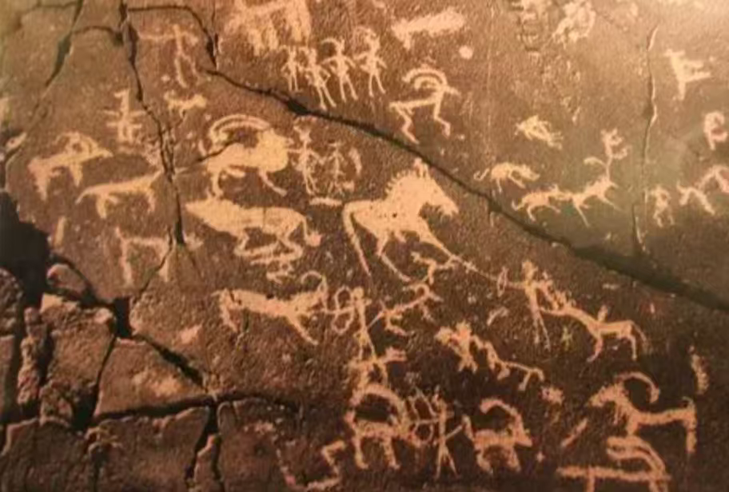
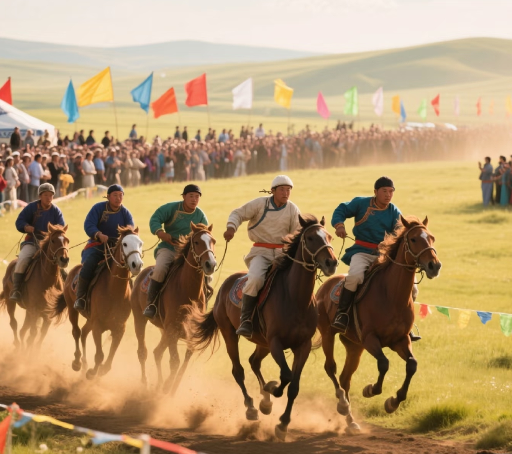
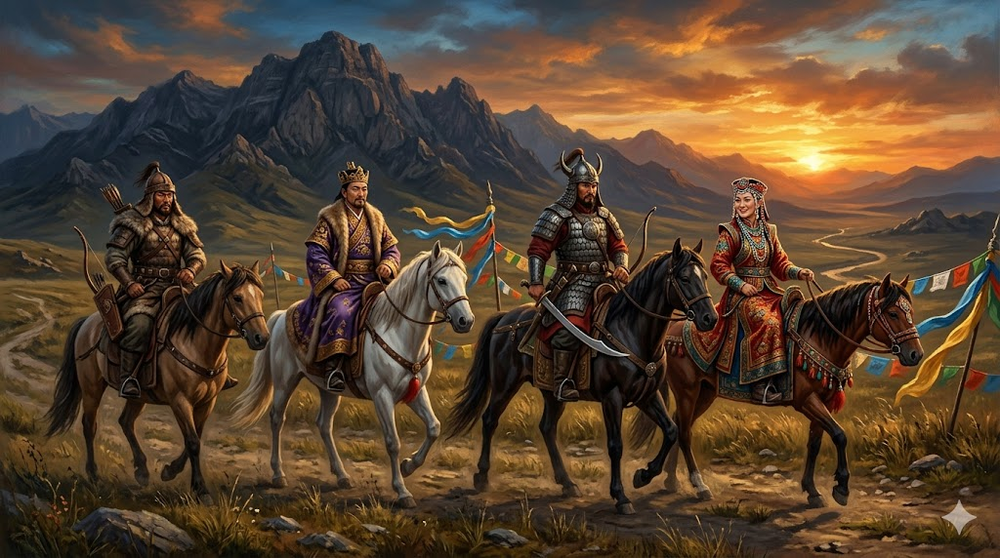
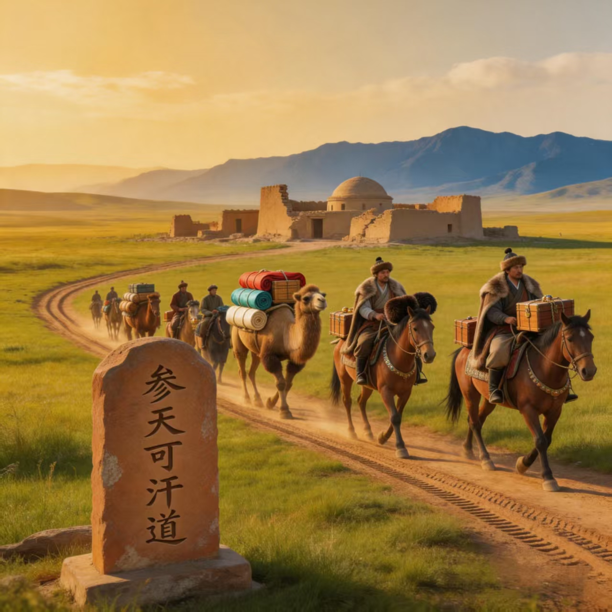
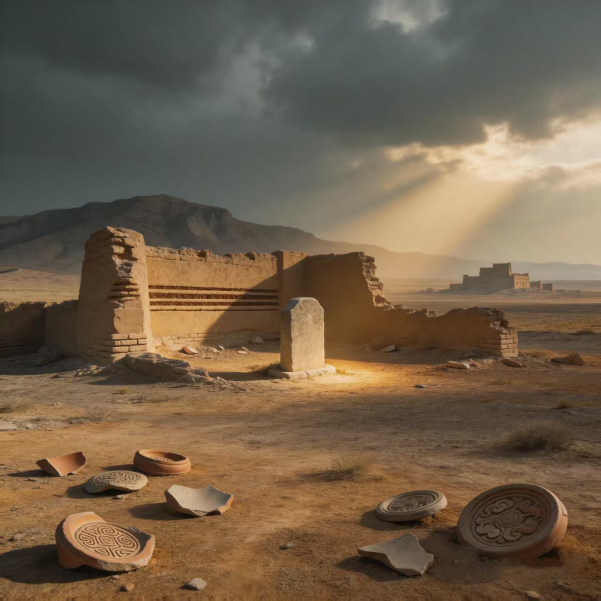

🪨 岩画艺术
阴山岩画分布150余处，留存五万余幅，从旧石器时代延至元明。题材涵盖狩猎、放牧、祭祀、星辰、战争等，被誉为“北方游牧民族的无字史诗”。2006年为全国重点文保单位，2012年列入世界文化遗产预备名录。


阴山岩画分布150余处，留存五万余幅，从旧石器时代延至元明。题材涵盖狩猎、放牧、祭祀、星辰、战争等，被誉为“北方游牧民族的无字史诗”。2006年为全国重点文保单位，2012年列入世界文化遗产预备名录。

那达慕是蒙古族传统体育竞技大会，核心项目为摔跤（搏克）、赛马、射箭，被称为“男儿三艺”。2006年列入国家级非物质文化遗产，是阴山游牧文化活态传承的体现。

匈奴、鲜卑、突厥、回鹘、契丹、蒙古等数十个民族先后在阴山驻牧、迁徙、融合。赵武灵王胡服骑射、北魏定都盛乐……阴山是中华民族交往交流交融的活态样本。

战国赵长城、秦汉长城、北魏六镇、金界壕……阴山山脉是历代修筑长城最密集的地段。高阙塞、鸡鹿塞等著名关隘见证了两千年的边塞烽烟。
唐代参天可汗道、元代木怜道穿过阴山，茶叶、丝绸北上，马匹、毛皮南下。沿途古城、驿站印证了阴山在东西方交流中的枢纽地位。

托托城、沃野镇、元代砂井总管府……阴山南北散布着从战国至明清的古城遗址，是研究北方民族筑城史、屯垦史的活化石。
